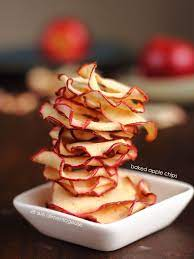

| |
 |
|---|
Ingredients
2 apples, thinly sliced
2 tsp. granulated sugar
1/2 tsp. cinnamon
Directions
FOR OVEN
Step 1
Preheat oven to 200°. In a large bowl, toss apples with sugar and cinnamon.
Step 2
Place a metal rack inside a rimmed baking sheet. Lay apples slices on top of rack, spacing them so that no apples overlap.
Step 3
Bake for 2 to 3 hours, flipping apples halfway through, until apples dried out but still pliable. (Apples will continue to crisp while cooling.)
FOR AIR FRYER
Step 1
In a large bowl toss apples with cinnamon and sugar. Working in batches, place apples in a single layer in basket of air fryer (some overlap is okay).
Step 2
Bake at 350° for about 12 minutes, flipping every 4 minutes.